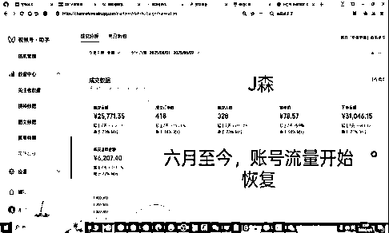

来源：https://vwzxb5qdvr.feishu.cn/docx/FyrSdzaCYoAg0kxN9WJcNFEqnah
哈喽，大家好，我是J森，上次分享还是在上次。目前毕业后一直在一线测试实操小红书跟视频号两个平台的带货以及其他变现玩法，这半年多以来折腾测试了挺多项目，中间有跑起来盈利的，但大多数测试的项目都是跑一半就夭折或者死了，能起来的项目还是占少数。对于普通人或者新人来说，要赚到第一桶金或者说赚到第一块钱来说，最快的方式就是以最低成本的方式去撬动获取自然流量然后进行转化变现。
对于普通人或者新人来说，要赚到第一桶金或者说赚到第一块钱来说，最快的方式就是以最低成本的方式去撬动获取自然流量然后进行转化变现。
视频号是国内互联网平台里面存量市场中内卷厮杀严重，或许作为国内电商平台最后一片有增量空间的电商净土，只要懂得微付费就能刺激撬动去获取大量自然流的平台。
特别是直播端口，如果懂得运营无人直播去微付费撬动流量，则能更加低成本高效的获取流量转化且去给账号打上权重持续推流。
去年年末我还在小红书平台上研究跟做直播跟笔记，在测试过程中发现视频号广场有一批做无人且流量很好，带货转化也不低的账号。
根据以往做电商的逻辑，看一眼视频号广场的店铺后台我就知道那些账号的店铺数据，因为之前测试过红书店铺和直播项目以及大学时期很多时间有测试跑通项目的经历，所以那些打视频号无人的逻辑基本看一眼就拆解出来，于是带着几个朋友立马测试进行入场开跑。
我们团队几个人在这几个月时间里面拿了十几个来个号来跑＋测试，目前活六七个号，大爆的数据有两三个
单月100w这个也是众多账号杀出来的数据，目前在稳定出单的有几个，也有几个起数据的账号也零零散散的持续出单，大多数账号一个月平的基本卖几万，大几千的都有，目前在这个平台上主攻女装，女鞋跟百货。
【做过互联网平台项目的老兵都知道平台的流量机制会存在一定的彩票概率，只能把账号当作一颗颗子弹去矩阵测试跑流量】
只要正确的方向＋正确的执行，那么成的概率则会大大增加。话不多说，以结果为导向
下面是我们账号运营数据情况，这是跑起来账号的几个月时间的运营数据，数据可查证：
账号项目收益：
（二三四月份直投直播间起号后账号就开始稳定推流，四月底五月份跑的好的这个账号被同行恶意举报，被违规限流了一个月，哈哈无所谓了，做这么久项目互联网这种情况已经习惯了）
二月份数据：（也是流量跑的比较好的一个月，因为是刚拉起号阶段）
三月份数据：
四月份数据：
五月份数据：（被点违规一轮，断崖式夭折限流一个月）
六月份数据：（账号逐步恢复流量冷启动）

项目收益情况：这个账号目前卖了三万多单，前期测试起号，账号确定推流正常，开播能进人后，每场投流1000-3000微信豆不等
每天固定播一场直播，大概投了一个半月以后，后面账号烧出自然流量，有正常流量推送了，就没去做投流操作纯靠自然流量跑动账号。
这个号是打的女装，退货率基本控制在百分之65左右估算，投流成本前后到现在大概花了三万多左右，客单价卖80左右，单件利润百分之35-45，数据可查证。
因为我们是开的小店，以及对接工厂，后端的售后也要处理跟进所以利润会高些，视频号也可以开通橱窗分销带别人的货，这样就只需要做好流量即可，无需管后端，不过这样的方式就只赚佣金，后端的利润也会下滑起。
同时为了保证分享输出的玩法可行性跟可复制性，目前已协助之前有经验的学员进行玩法实战，并进行输出实战案例，目前也实现单账号单月破10w gmv，目前在协助放大，这也是文章写到今天的实时数据，详情可见：
本篇文章将复盘这几个入局视频号的直播端测试玩法，所踩的坑以及项目的保姆级教程搭建
操作流程玩法相对简单，对于之前干过无人的朋友就知道，就是从抖音或者其他直播平台的直播间录制或者转接，然后通过OBS转到视频号上直播
在素材跟品选对情况下，然后通过前期的微付费直投直播间去刺激账号，直播间动销出单后，带动烧出自然流起权重，让账号稳定推流转化。
接下来我会重点讲讲这段时间做视频号这个平台的一线实操经验复盘以及踩过哪些坑，下面也会对账号进行拆解。
项目内容框架大致如下：
视频号赛道选品
录播转播抖音直播素材
测品测素材方法
投流，直投直播间推流逻辑
注意事项
视频号无人直播赛道踩坑点
最近视频号的短引阵地违规情况严重，一些朋友入局都是以亏钱收场，视频号短引的流量若能打起来账号，人群没被转化被洗过，确实很纯很干净，特别是烧出自然流以后的账号
然而视频号的直播端也是很大的流量入口来源且有趋势，目前无人素材做好处理或者去的转播违规并不严重，且计划上的好以及运营的好能持续性稳定的获取流量转化，且玩法很多，可以直接打无人素材的直播跟转播
也可以前期先进行无人起号打标签，账号上权重后推流再转真人实现低成本直播间运营，也可以进行真人直播间起号后打“真转无”的打法一样能降本增效，做过抖音和其他平台的朋友自然懂得。
要不要测试这个平台的无人直播打法，各位圈友可自行判断，本人测试的项目经验跟想法存在一定主观局限性，也欢迎各位来探讨交流。
目前来看，视频号账号无人起号后，打上标签的账号具备持续性，但也存在违规的概率，这个打法也可以试着前期起号以及本身自有真人账号去进行真转无去打，做到降本增效。
这几个月来我们拿了十几二十个号去测试直播，总共盈利的账号有七八个，大的推流账号有两个拿到结果，一将功成万骨枯
要撸视频号的直播自然流量，用这个方法，目前优势是可以省去高昂的直播间搭建成本以及主播成本，弊端是会存在违规，但是有一定的运营能力跟项目经验可以减少废号概率，而且跑起来的大号会持续稳定的灌流量，也适合赚波快钱。
核心玩法操作流程就一句话：录制其他平台素材通过OBS搬运到视频号去直播或转播去获取流量并且转化
快速起号就一句话：平台截流选品以及通过抖音以图搜直播间录制素材，通过找抖音账号直播间流量趋势去选品选素材。
对于运营老兵可以下场实操了。对于新手而言，从实操上术层面上方就下面这几步：
第一：选品
第二：通过OBS录制平台素材录播以及转播打法
第三：测品测素材
第四：投流微付费冷启动撬动直播间
第五：注意事项以及可能存在的坑
内容兴趣电商最常见最重要的选品方式就是通过平台站内销量趋势的品去选品，用正常微信账号，去视频号直播广场刷直播间，找一些场馆在两三千，销量有一两千左右就算还可以的直播间
然后选定一个你要做的品，比如你要做女装，或者做女鞋，你就一直刷这个类目，后期打上标签会一直给你推这些品以及会给您带来选品方向上的调正
其次选品的时候最好是场馆低且短视频没发多少的直播间，没有大爆量的，意味着竞争少，且偏属“蓝海”，有上升趋势，下面这些都还OK。
核心逻辑就是寻找靠纯直播起量的对标直播间即可。跟爆款，看趋势。
前期可以找十几个这样账号关注起然后就可以测试起来。
第二种想要吃到第一波流量以及热销品，就可以借助第三方软件，像灰豚，考古加，蝉妈妈这些，人群定位25-40岁的女性群体，这个粉丝画像具备一定的消费能力，然后看最近7天到30天的数据去测试。
先在抖音里找对标产品直播间，用小绿点软件进行录制，录制时长在2-3小时以上。
找素材很简单，只要你在视频号站内找到要打的品，直接保存他的品，然后截图→在抖音上以图搜款的方式找到对标直播间：
方法跟第一步一样，先找到账号所需直播间，然后作为对标账号，然后切直播源地址，复制其直播源链接到OBS里面推流，就能正常进行转播打法。方法要用360浏览器然后再下载一个猫抓工具，对原直播间进行爬取就可以了。
这是转播工具：
https://pan.baidu.com/s/12ul-9obp5MVNTSynCy1rtQ
提取码:k46q
目前测试来说，转播后素材跑量会相对比较稳定。
把素材添加到OBS中，然后在设置中调一下视频的分辨率”1080*1920”，音频设置成”监听并输出“，素材一定要设置成”循环播放”，最后把虚拟摄像头打开。
四:小红书直播助手设置
下载小红书直播助手：点击摄像头，选择OBS虚拟摄像头，找到1080*1920分辨率，如果找不到刷新一下就可以了。
然后点击开播就可以，直播封面也很重要，一个点击率高的封面，也可以给直播间带来很多流量，另外就是标题，模仿爆款直播间的标题修修改改即可。
测试无人测品跟素材需要三场直播，每场大概测3-4小时，直到测试出单为止。
三场直播分别使用不同直播间或者同一直播间不同场次的最新直播素材
爆单起量后，保持每天直播1-2场，按照正常真人直播间素材直播即可
起量的直播间评论区需要做互动跟进直播间，以拉高直播转化。
视频号的推流前期大多需要微付费去刺激冷启动账号直播间推流烧出自然流以及精准流量转化，如果是纯播一般除非你的直播间跟主播足够优质，否则基本直播推流到一定场馆就会卡住不推流。
我们团队新号的投流逻辑一般都是：直投直播间，然后投“直播间成交”然后性别选女，年龄在25-40岁左右，这个年龄群体的消费质量较高
一般一场投1000-2000微信豆冷启动带动自然流，加热时长1-1.5小时，观众兴趣填写你所需要打的品类即可。
正常账号素材品没问题，测试基本3-4场测出品跟素材转化之后，烧出自然流量账号就开始冷启动激活，后面会带来源源不断的自然流，后面测试只需要看情况投流打正账号直播间让其正常的直播成交转化即可。
直播录播所需软件工具
OBS插件：https://obsproject.com/
转播软件：https://pan.baidu.com/s/1Ezrl2ty64KvKTcJ_qhJDfA?pwd=3299
提取码:3299
VLC插件：https://www.videolan.org（这个是让素材可以拼接的
直播录制软件：可以使用下面的免费软件，任何抖音正在直播的直播间，只需要复制链接，放入工具当中就能自动监控，就行，录制只要内存够大均可。
点击完成，就可以开始录制起了。
转播软件：这个转播软件本质就是通过猫抓去爬取其他平台直播素材的直播源然后通过OBS转接进行推流实时转播，首先要先下载一个360浏览器（猫抓只要在这里才能进行驱动）
然后把猫抓插件插入360浏览器然后复制其直播源地址到OBS上进行转接实时转播，下面可以看看图片引导：
打开下载后的转播软件安装包就出现了：
然后在360浏览器随意打开一个主播的直播间，在猫抓找到对应的源地址后复制：
然后打开OBS添加视频源：
OK这样就开始接入直播转播的素材了，这样就可以做到实时转播跟播的效果。
（2）视频号直播助手的调试
打开“视频号直播工具”→打开直播伴侣就能正常开播了
（两者带货都要先缴纳100保证金，小店保证金变现后需要2000缴纳才能提交货款）
（1）开通视频号小店：
按照下面图示一步步开启认证即可，开通店铺可以带自己的品，从产品发货到产品售后过程都要处理，但是赚取的利润空间会大：
（2）开通短视频橱窗：
开通橱窗带货后，可以在视频号助手的选品中心带别人的品进行分销，这样你只需要做好前端的流量，然后完成销售即可。优势是不用处理售后，只需做好流量赚取佣金即可，劣势是总体利润会下滑起，尽量找高佣产品的素材进行测试。


新号起号：基本账号选定为三天一个素材＋一个测试周期，前三天，每天选定一个直播间素材，一天一场的节奏，先测试账号直播流量是否正常，一般视频号推流直播在线人数半小时能推个一两百人就算正常流速水平。
一个产品跟素材三天就能测试完成，如果开播测试能转化出单，就可以尝试上投流计划，前期上100-200微信豆直投直播间加热，人群选“女”，年龄25-40，“兴趣”填写你所要做的类目去打的人群
若没有起来转化出单，可以直接选择换品，或者产品有一定的利润，可以养号一段时间，如果账号直播间起热度了，可以混剪几条短视频去给直播间带上产品流量。
起权重的账号：投流一般每个小时就可以投一次去拉直播间，给直播间带来精准定位流量。
后期账号稳定之后，直播间场馆每天保持十几二十人在线以及几千场馆，账号会有自然流推送，后面可以看情况进行投放，使账号人群更精准起，下面就是账号稳定推送的数据
以上就是整个账号的搭建跟运营以及投流环节了。
输出的内容框架或许看起来简单，但是新人如果实操可能还是会遇到卡点，因为我们这边已经跑通了且之前都是有打过项目的经验
所以对熟悉的项目入局体感感知会比较清晰，很多项目的逻辑都大差不多，就是换个玩法或者换个平台，把A学到以及测试到的东西套到B上，就能跑出闭环。
但我也深知从0-1打起来一个账号或者做起来项目，测试的环境一定是不容易的，每一个项目的测试背后，一定都会出现层出不穷，无穷无尽的卡点和波折。
我们测试过程中也是废了好一堆账号，在测试账号的过程中我们也会经历一段时间的“黑洞期”，那是一段对项目没有明确体感，模糊的测试阶段，测试那段时间基本直播测流打品打号都会打到凌晨这样：
在没有及时正反馈给到的时候，最容易的坚持方式就是对标你的竞争对手，对标他的店铺数据日增销量给自己打鸡血起。
虽然会经历测试难熬的阶段，但这也会给账号爆量起流量的那种喜悦铺垫加以色彩，做项目过程中我们终要相信：莫道浮云终蔽日，严冬过尽绽春蕾。
测试直播电商会有几个比较磨人的地方，测试阶段对项目体感不明确会很熬心态
或者说对于新手做项目都是这样，而做过跑通项目的人都已经有自己的一套体感，知道在什么时间点会跑通闭环，所以能够有一定的延迟满足。
1、新手遇到的第一个卡点会是可能不好判断具体的品是处在爆发期的哪个阶段，如果是大爆款，很多人都在跟的品。那么，这种情况去跟的话，会出现几十个直播间的画面都是同质化的画面，所以会出现违规，被判定录播违规。
2、测品阶段的时候，压力也是会有的
打女装，那么上架录制抖音直播视频之前，需要比百货类目赛道花更多的时间在1688和淘宝或者其他货源平台找更具有性价比的货源
因为抖音的爆款直播间的女装价格都是有一定的价格优势的。那么挑战是，在1688和淘宝找供应链的时间也需要花费比更多，如果找不到有利润空间的货源，那么这个品也没有去打的意义。
3、视频号的跟品时间时效性比较短，可能晚两天跟进这个品，成功的概率会下降至少一半，需要的是今天看到对标趋势的品，今天立马就去测试流量，最晚明天去测试的这种的超强执行力!
4、女装类目整体的售后和退货，也是需要花费比较多的时间的，看着GMV 很高，但其实利润率比百货类目在小红书赛道是低很多的。
5、短周期内，对于个人来说，想要抓住机会，抓紧利润，一定要客观的认识到，违规是会存在的，但是视频号目前是不会死号，如果弹窗最稳妥的方法就是下播，如果被抓只会违规限流3-7天，限流解除后正常播推流即可，最好多准备几个视频号。
因为做无人直播，本身是在切平台野蛮生长期的规则不严的这段时间的量，走到最后肯定是无人直播结合真人直播的正规打法，但目前能做就可以先捞，后续赚到钱起账号权重也能更好的转真人去打。
6、视频号即使被判定录播违规，店铺不会冻结资金、这是可以去打的红利点。
7、本质是在拼概率，包括我们自己做起来的七八个账号直播间，也是几十个号里面，只成功了2个爆的流量大的账号
8、选品选素材投流投产要测试好，还要计算退货率这些，总体GMV减去退货再减去投流成本的利润，不然ROI达标不上就会产生微亏。
1、直播前或者直播中发布带产品的视频也很有用，短视频直播互相联动，也可以给直播间带来一定的流量。
2、录播时要把OBS把循环打开，转播直接切直播源就行
3、录制素材的软件只要挂着就可以，直播间只要开播就能自动录制。
4、新号的话第一场一般流量不会特别高，也正常，继续播两场看看，每次直播时间可以拉到2-3小时以上。
5、录制是素材尽量在2小时以上，最稳的是素材播一次就行，在实际直播过程中，如果场观在线特别高，也可以继续播。
6、如果有账号违规限流了，可以再等一下，隔天试试，还是没流量，就可以考虑换号了。
7、账号都是消耗品，一场直播拉起来只要能突破10万+GMV，一切都是值得的。
8、视频号直播赛道目前的选品策略、女装流量大于女鞋大于食品大于百货的权重。
9、做视频号直播的矩阵，电脑可以采购组装机、或者买二手笔记本或者上人人租进行租赁
会运营视频号的无人直播间，能够低成本高效的去撬动获取自然流量，且目前来说打压还不是很严格，起账号流量赚到钱后维护运营，后面有钱了也可以转战正规打法。
10、视频号目前要带货橱窗需要缴纳100保证金就能挂品带货，而且电脑端进行OBS直播或者转播开播需要涨有效粉200以上才能开播（死粉的开播不了），有需要的朋友可以找我拿低价的有效涨粉渠道。
11、如果被检测出来账号存在违规，那平台就会让你进行真人验证处理，这时候可以用软件AI报时处理，但是通过存在一定概率，最稳妥的方式是直接下播，然后不会影响下一场的直播流量推送。
人是环境的产物，互相交流探讨，才能互相有更大的进步
看完有收获帮助的朋友可以点个赞，有什么不懂的地方可以评论区交流，以上，祝各位圈友发财。